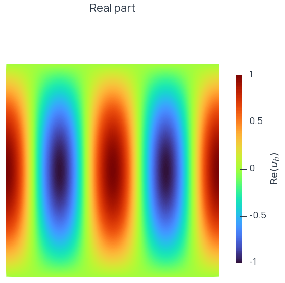
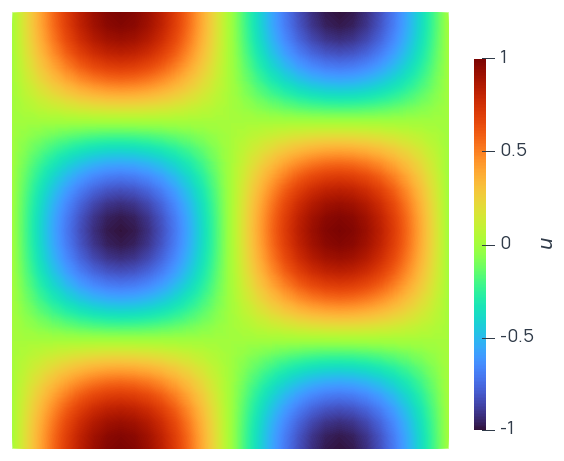
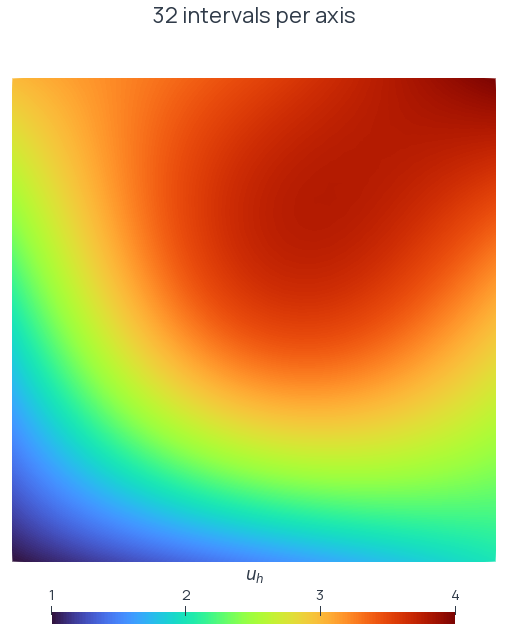
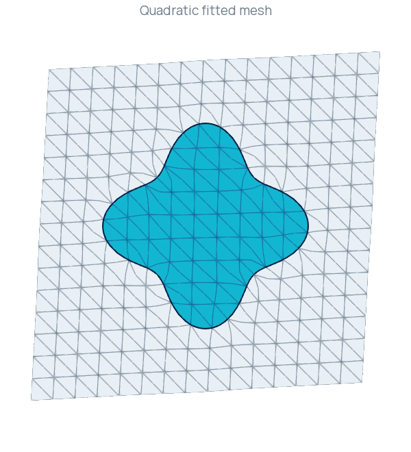
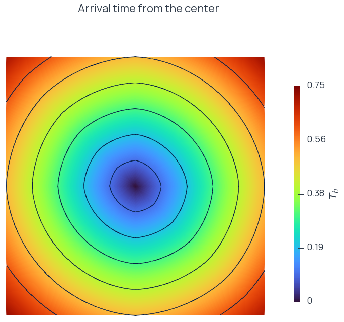

Gallery
Computed fields, evolving designs and fitted meshes.
The figures link to tutorials with the mathematical problem, executable source, output files and numerical checks. Colors and geometry come from the computed output described on those pages.
Partial differential equations
Poisson equation

Scalar diffusion on the unit square with homogeneous Dirichlet data. Continuous elements supply the field, and CG solves the symmetric positive-definite system.
Linear elasticity

A clamped beam with end traction, vector-valued displacement and the linear elastic strain–stress relation. The displayed deformation is amplified for inspection.
Helmholtz equation

A manufactured complex wave field with prescribed boundary values. Real and imaginary parts are displayed separately after the complex solve.
Stokes equations

Viscous cavity flow with a regularized lid, mixed velocity–pressure spaces and a zero-mean pressure constraint.
Navier–Stokes equations

Transient flow driven by a horizontally moving lid patch. Taylor–Hood elements and semi-implicit Oseen steps resolve the velocity and pressure. The tutorial includes the computed animation.
Periodic Poisson equation

A periodic scalar field with identified boundary degrees of freedom and a mean-value constraint fixing the constant mode.
Reaction–diffusion on a surface

A reaction–diffusion field on a triangulated approximation of the unit sphere. Tangential gradients and surface measure enter the variational form.
Discontinuous Galerkin diffusion

A symmetric interior-penalty method with independent affine coefficients on each triangle. The tutorial checks a nonzero Dirichlet patch and measured convergence under refinement.
Optimization
Boundary-deformation cantilever

Initial and updated domains for compliance minimization with an area penalty. A regularized shape derivative drives boundary displacement and MMG maintains the mesh between updates.
Level-set cantilever

A transported level set and body-fitted elasticity solve. The page records the fixed-step objective history and the measured mesh-quality limitation.
Thermal material distribution

A SIMP conductivity field updated using the state, adjoint and regularized design gradient. The objective combines mean temperature and a material penalty.
Geometry and distance fields
Interface fitting

Quadratic fitting of a four-lobe target. The reference mesh is retained while all output geometry nodes receive the solved displacement.
Arrival-time propagation

Unit-speed propagation from a central vertex. The tutorial compares the computed field with analytic distance at three mesh resolutions.
Distance normalization

A signed Poisson potential normalized around three disks. An analytic reference exposes the geometric and normalization errors.
Continue
- Examples and tutorials — Choose a numerical problem.
- Input, output, and visualization — Export and inspect computed fields.
- Working with MMG — Prepare and adapt mesh geometry.